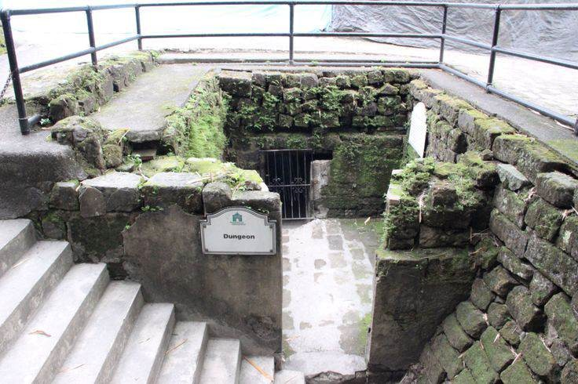

Fort Santiago is the oldest Spanish bastion in the Philippines. Situated inside the walled city of Intramuros in Manila, the site witnessed many historical events of the Philippines. The exact spot where Fort Santiago now stands was once a Muslim kingdom ruled by a chieftain named Rajah Sulayman.
Historical Significance: Fort Santiago is a symbol of the Philippines' tumultuous past. It played an important role in the country's history during the Spanish and American colonial periods, as well as during World War II. It was once a Spanish military fortress that housed prisoners, and it also served as the headquarters of the Japanese army during World War II. The fort is also where the national hero Jose Rizal was imprisoned before his execution, making it a significant site for Filipinos.
Architectural Beauty: Fort Santiago is an impressive example of Spanish colonial architecture. The fort's walls, gates, and moat are well-preserved and provide visitors with a glimpse into the country's colonial past.
Educational Opportunities: Fort Santiago is a great place to learn about Philippine history. The fort houses several museums and exhibits that showcase the country's cultural heritage, including the Rizal Shrine, which features exhibits on the life and works of Jose Rizal, and the Intramuros Visitors Center, which provides a comprehensive history of Intramuros.
Scenic Views: The fort's location on the banks of the Pasig River provides visitors with stunning views of the surrounding area, including the Manila skyline.
Overall, Fort Santiago is an important historical site that offers visitors a glimpse into the Philippines' rich cultural heritage and history. Its beautiful architecture, educational exhibits, and scenic views make it a must-visit destination for anyone traveling to Manila.